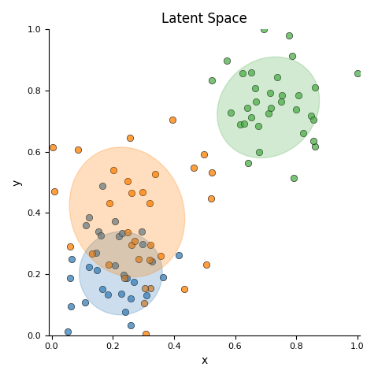
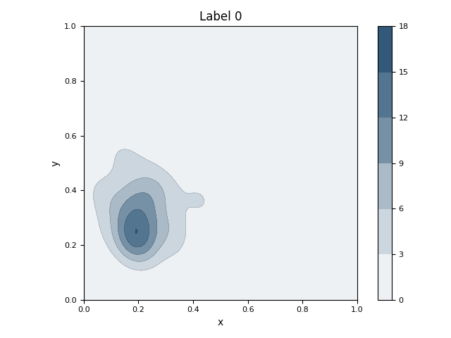
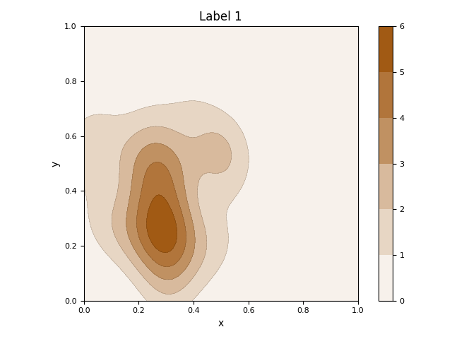
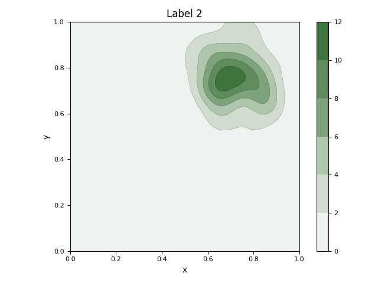

Note
Click here to download the full example code
Plot GMM and KDE¶
This example estimates and displays the Gaussian Mixture Model (GMM) and KDE (Kernel Density Estimation) for each class.
- 
- 
- 
- 
10 11 12 13 14 15 16 17 18 19 20 21 22 23 24 25 26 27 28 29 30 31 32 33 34 35 36 37 38 39 40 41 42 43 44 45 46 47 48 49 50 51 52 53 54 55 56 57 58 59 60 61 62 63 64 65 66 67 68 69 70 71 72 73 74 75 76 77 78 79 80 81 82 83 84 85 86 87 88 89 90 91 92 93 94 95 96 97 98 99 100 101 102 103 104 105 106 107 108 109 110 111 112 113 114 115 116 117 118 119 120 121 122 123 124 125 126 127 128 129 130 131 132 133 134 135 136 137 138 139 140 141 142 143 144 145 146 147 148 149 150 151 152 153 154 155 156 157 158 159 160 161 162 163 164 165 166 167 168 169 170 171 172 173 174 175 176 177 178 179 180 181 182 183 184 185 186 187 188 189 190 191 192 193 194 195 196 197 198 199 200 201 202 203 204 205 206 207 208 209 210 211 212 213 214 215 216 217 218 219 220 221 222 223 224 225 226 227 228 229 230 231 232 233 234 235 236 237 238 239 240 241 242 243 244 245 246 247 248 249 250 251 252 253 254 255 256 257 258 259 260 261 262 263 264 265 266 267 268 269 270 271 272 273 274 275 276 277 278 279 280 281 282 283 284 285 286 287 288 289 290 291 292 293 294 295 296 297 298 299 300 301 302 303 304 305 306 307 308 309 310 311 312 313 314 315 316 317 318 319 320 321 | # Libraries
import numpy as np
import pandas as pd
import matplotlib as mpl
import matplotlib.pyplot as plt
# Specific
from scipy import linalg
from sklearn import mixture
from sklearn.datasets import make_blobs
from sklearn.preprocessing import MinMaxScaler
from scipy.stats import gaussian_kde
from matplotlib.colors import LinearSegmentedColormap
# Latexify
mpl.rc('font', size=10)
mpl.rc('legend', fontsize=6)
mpl.rc('xtick', labelsize=8)
mpl.rc('ytick', labelsize=8)
# -----------------------------------------
# Methods
# -----------------------------------------
def make_colormap(seq):
"""Return a LinearSegmentedColormap
Parameters
----------
seq: list
A sequence of floats and RGB-tuples. The floats
should be increasing and in the interval (0,1).
"""
# Library
import matplotlib.colors as mcolors
# Code
seq = [(None,) * 3, 0.0] + list(seq) + [1.0, (None,) * 3]
cdict = {'red': [], 'green': [], 'blue': []}
for i, item in enumerate(seq):
if isinstance(item, float):
r1, g1, b1 = seq[i - 1]
r2, g2, b2 = seq[i + 1]
cdict['red'].append([item, r1, r2])
cdict['green'].append([item, g1, g2])
cdict['blue'].append([item, b1, b2])
return mcolors.LinearSegmentedColormap('CustomMap', cdict)
def adjust_lightness(color, amount=0.5):
"""Adjusts the lightness of a color
Parameters
----------
color: string or vector
The color in string, hex or rgb format.
amount: float
Lower values result in dark colors.
"""
# Libraries
import matplotlib.colors as mc
import colorsys
try:
c = mc.cnames[color]
except:
c = color
c = colorsys.rgb_to_hls(*mc.to_rgb(c))
return colorsys.hls_to_rgb(c[0], \
max(0, min(1, amount * c[1])), c[2])
def kde_mpl_compute(x, y, xlim=None, ylim=None, **kwargs):
"""Computes the gaussian kde.
Parameters
----------
Returns
-------
"""
try:
# Plot density
kde = gaussian_kde(np.vstack((x, y)), **kwargs)
except Exception as e:
print("Exception! %s" % e)
return None, None, None
# Parameters
xmin, xmax = min(x), max(x)
ymin, ymax = min(y), max(y)
# Set xlim and ylim
if xlim is not None:
xmin, xmax = xlim
if ylim is not None:
ymin, ymax = ylim
# evaluate on a regular grid
xgrid = np.linspace(xmin, xmax, 100)
ygrid = np.linspace(ymin, ymax, 100)
Xgrid, Ygrid = np.meshgrid(xgrid, ygrid)
zgrid = kde.evaluate(np.vstack([
Xgrid.ravel(),
Ygrid.ravel()
]))
Zgrid = zgrid.reshape(Xgrid.shape)
# Return
return xgrid, ygrid, Zgrid
def plot_ellipses(gmm, ax, color, n=None):
"""Plot ellipses from GaussianMixtureModel"""
# Define color
if color is None:
color = 'blue'
if n is None:
n = 1
# Get covariances
if gmm.covariance_type == 'full':
covariances = gmm.covariances_[n][:2, :2]
elif gmm.covariance_type == 'tied':
covariances = gmm.covariances_[:2, :2]
elif gmm.covariance_type == 'diag':
covariances = np.diag(gmm.covariances_[n][:2])
elif gmm.covariance_type == 'spherical':
covariances = np.eye(gmm.means_.shape[1]) * gmm.covariances_[n]
# Compute
v, w = np.linalg.eigh(covariances)
# v = 2. * np.sqrt(2.) * np.sqrt(v) # Oliver
u = w[0] / np.linalg.norm(w[0])
angle = np.arctan2(u[1], u[0])
angle = 180 * angle / np.pi # convert to degrees
v = 2. * np.sqrt(2.) * np.sqrt(v)
# Plot
ell = mpl.patches.Ellipse(gmm.means_[n, :2],
v[0], v[1], 180 + angle, color=color)
ell.set_clip_box(ax.bbox)
ell.set_alpha(0.25)
ax.add_artist(ell)
ax.set_aspect('equal', 'datalim')
# -----------------------------------------
# Create data
# -----------------------------------------
# Colors
colors = ['#377eb8', '#ff7f00', '#4daf4a',
'#a65628', '#984ea3',
'#999999', '#e41a1c', '#dede00']
c1 = colors[0]
c2 = colors[1]
c3 = colors[2]
# Data
data = [
[0.19, 0.25, 0, 1, 0, 0, 0],
[0.15, 0.21, 0, 1, 0, 0, 0],
[0.13, 0.19, 0, 1, 0, 0, 0],
[0.16, 0.12, 0, 1, 0, 0, 0],
[0.21, 0.14, 0, 1, 0, 0, 0],
[0.38, 0.18, 0, 1, 0, 0, 0],
[0.50, 0.52, 1, 0, 1, 0, 0],
[0.40, 0.58, 1, 0, 1, 0, 0],
[0.49, 0.72, 1, 0, 1, 0, 0],
[0.44, 0.64, 1, 0, 1, 0, 0],
[0.60, 0.50, 1, 0, 1, 0, 0],
[0.38, 0.81, 1, 0, 1, 0, 0],
[0.40, 0.75, 1, 0, 1, 0, 0],
[0.47, 0.61, 1, 0, 1, 0, 0],
[0.52, 0.65, 1, 0, 1, 0, 0],
[0.50, 0.55, 1, 0, 1, 0, 0],
[0.46, 0.54, 1, 0, 1, 0, 0],
[0.60, 0.50, 1, 0, 1, 0, 0],
[0.68, 0.52, 1, 0, 1, 0, 0],
[0.61, 0.77, 1, 0, 1, 0, 0],
[0.51, 0.79, 1, 0, 1, 0, 1],
[0.64, 0.80, 1, 0, 1, 0, 1],
[0.54, 0.75, 1, 0, 1, 0, 1],
[0.58, 0.81, 1, 0, 1, 0, 1],
[0.80, 0.82, 2, 0, 0, 1, 1],
[0.85, 0.83, 2, 0, 0, 1, 1],
[0.90, 0.85, 2, 0, 0, 1, 1],
[0.84, 0.80, 2, 0, 0, 1, 1],
[0.81, 0.78, 2, 0, 0, 1, 1],
[0.92, 0.79, 2, 0, 0, 1, 1],
]
"""
# Create DataFrame (manual data)
data = pd.DataFrame(data)
data.columns = ['x', 'y', 'target',
'Label 0', 'Label 1', 'Label 2',
'Label 3']
"""
# Create bloobs
X, y = make_blobs(n_features=2,
centers=[[0.35, 0.35],
[0.45, 0.45],
[0.7, 0.70]],
cluster_std=[0.07, 0.10, 0.07])
# Preprocessing
X = MinMaxScaler().fit_transform(X)
# Create Dataframe
data = pd.DataFrame(X, columns=['x', 'y'])
data['target'] = y
for i in np.unique(y):
data['Label %s' % i] = y==i
data = data[(data.x>0) & (data.x<1)]
data = data[(data.y>0) & (data.y<1)]
# Create X
X = data[['x', 'y']]
# Create gaussian
gmm = mixture.GaussianMixture(
n_components=3, covariance_type='full')
# Since we have class labels for the training data, we can
# initialize the GMM parameters in a supervised manner.
gmm.means_init = np.array( \
[X[data.target == i].mean(axis=0)
for i in range(3)])
# Fit a Gaussian mixture with EM using five components
gmm = gmm.fit(data[['x', 'y']])
# -----------------------------------------
# Visualisation (
# -----------------------------------------
# Create figure
figure, ax = plt.subplots(1,1, figsize=(4.8, 4.8))
for i, (c, aux) in enumerate(data.groupby('target')):
# Plot markers
ax.scatter(aux.x, aux.y, c=colors[i],
edgecolors='k', alpha=0.75,
linewidths=0.5)
# Plot ellipse
plot_ellipses(gmm, ax, color=colors[i], n=i)
# Configure
ax.set(xlabel='x', ylabel='y',
aspect='equal',
xlim=[0, 1], ylim=[0, 1],
title='Latent Space')
# Hide the right and top spines
#ax.spines.right.set_visible(False)
#ax.spines.top.set_visible(False)
# Adjust
plt.tight_layout()
# -----------------------------------------
# Visualisation labels
# -----------------------------------------
# Loop
for i, l in enumerate(['Label 0',
'Label 1',
'Label 2']):
# Filter data
aux = data[data[l] == 1]
# Compute KDE
xgrid, ygrid, Zgrid = \
kde_mpl_compute(aux.x, aux.y,
xlim=[0, 1], ylim=[0, 1])
# Create colormap
cmap = LinearSegmentedColormap.from_list("",
['white', adjust_lightness(colors[i], 0.6)], 14)
# Create figure
figure, ax = plt.subplots(1,1)
# Plot contour
ax.contour(xgrid, ygrid, Zgrid,
linewidths=0.25, alpha=0.5, levels=5,
linestyles='dashed', colors='k')
# Plot fill spaces
cntr = ax.contourf(xgrid, ygrid, Zgrid,
levels=5, cmap=cmap)
# Add colorbar
cb = plt.colorbar(cntr, ax=ax)
# Configure
ax.set(xlabel='x', ylabel='y',
aspect='equal', title=l,
xlim=[0, 1], ylim=[0, 1])
# Adjust
plt.tight_layout()
# -----------------------------------------
# All together
# -----------------------------------------
# Con
plt.show()
|
Total running time of the script: ( 0 minutes 0.729 seconds)